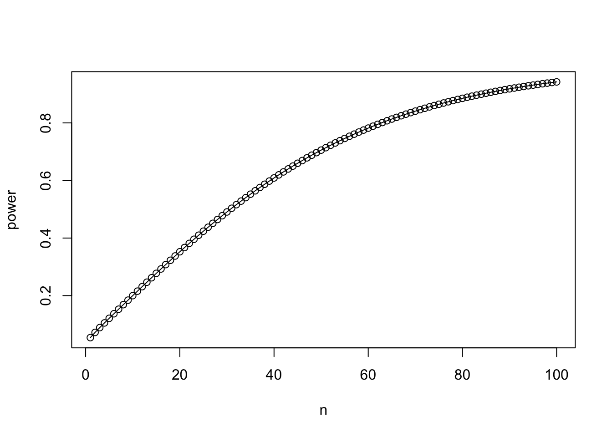
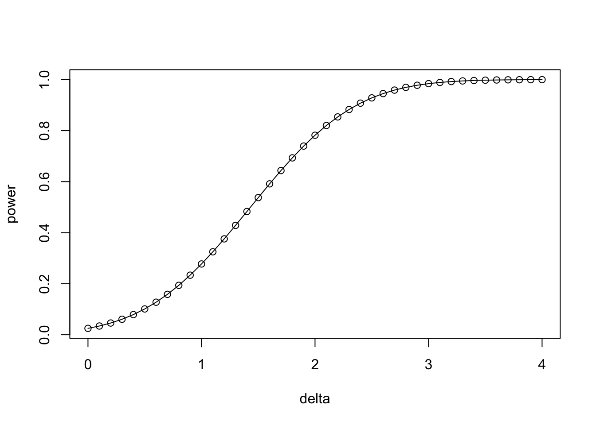
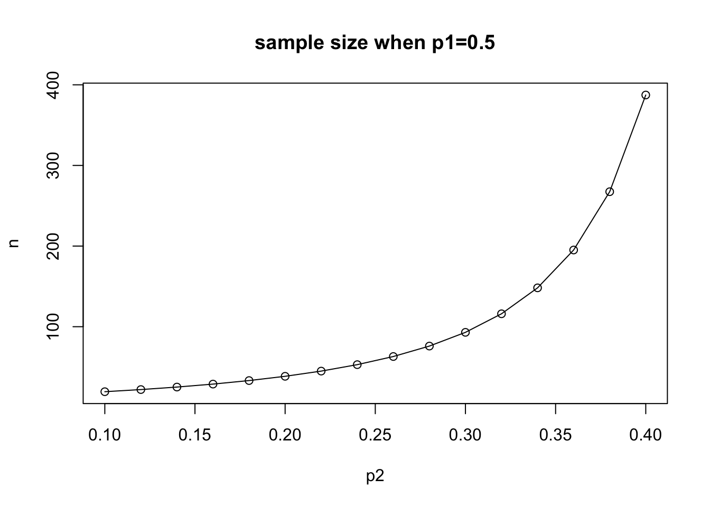

library(tidyverse)
library(kableExtra)
library(ggplot2)
library(here)
library(survival)
library(colorizer)13 연구대상자수의 결정
13.1 필요한 패키지
13.2 개요
임상시험을 수행하기 위해서는 표본의 수(sample size), 즉 연구대상자를 실험 전에 먼저 정하고 실험을 해야한다. 대부분의 임상실험은 실험 전에 필요한 연구대상자의 수를 미리 정하고 실험을 진행한다. 엄격한 증거가 요구되는 임상실험에서는 실험 중에 원하고자 하는 결과가 나올 때 까지 대상자수를 늘리는 것이 일반적으로 받아들여 지지 않는다. 또한 충분하지 않은 소수의 대상자만으로 얻은 결론 또한 받아들여 지기 힘들다.
임상실험에서 환자의 수를 결정하는 것은 연구 설계의 핵심 요소 중 하나이며, 다음과 같은 주요 요소를 고려해야 합니다:
- 통계적 검정력 (Statistical Power)
- 유의수준 (Significance Level, \(\alpha\) ): 일반적으로 0.05로 설정.
- 검정력 (Power, \(1-\beta\)): 보통 80% 또는 90%로 설정.
- 효과 크기 (Effective Size)
- 실험군과 대조군 간의 차이의 크기를 의미.
- 효과 크기가 클수록 적은 환자 수가 필요.
- 효과 크기가 작을수록 더 많은 환자 수가 필요.
- 변동성 (Variability)
- 측정 데이터의 변동성이 클수록 더 많은 환자 수가 필요.
- 이전 연구 또는 파일럿 연구의 데이터를 활용해 변동성을 추정.
- 임상적 중요성 (Clinical significance)
- 통계적으로 유의미한 결과(statistical significance)뿐만 아니라 임상적으로 중요한 결과(clinical significance)를 도출하기 위한 환자 수.
- 연구 목적과 기대되는 결과의 임상적 유의성을 정의.
- 효과 크기와 관련됨.
- 실험의 설계 (Design)
- 시험 유형: 무작위 대조군 시험(RCT), 교차 설계(Crossover Study) 등.
- 비교그룹의 의 수: 실험군과 대조군의 수에 따라 필요한 환자 수도 달라짐.
- 주요 측정 변수(primary end point)의 유형(이산형, 연속형)에 따라 표본 크기 계산이 달라짐.
- 중도 탈락률 (Dropout Rate)
- 임상시험 중 환자가 중도 탈락할 가능성을 고려.
- 예상 탈락률에 따라 환자 수를 추가로 모집(예: 10~20% 추가).
- 윤리적 고려 (Ethical Considerations)
- 과도한 환자 모집은 윤리적 문제를 초래할 수 있음.
- 연구 목적을 달성하는 데 필요한 최소 환자 수를 산출.
- 예산 및 시간 (Budget and Time)
- 연구에 사용할 수 있는 자원(예산, 시간)이 환자 수 결정에 영향을 미침.
- 필요한 환자 수와 연구비용 간의 균형.
- 규제 요건 (Regulatory Requirements)
- 임상시험 설계에 관한 국가 규제기관(예: FDA, EMA)의 지침 준수.
그러면 실험 전에 어떻게 필요한 연구대상자의 수를 결정할 수 있을까?
13.3 통계적 가설검정과 오류
연구대상자의 수를 실험 전에 결정하기 위해서는 모집단에 대한 두 가지 정보가 필요하다. 이제 통계학에서 나오는 가장 기본적인 가설검정인 두 정규분포의 평균의 차이에 대한 검정 문제에서 연구대상자의 수를 결정하는 절차를 알아보자.
확률변수 \(X\)는 정규분포 \(N(\mu_1, \sigma^2)\)를 따르고 \(Y\)는 \(N(\mu_2, \sigma^2)\)를 따른다고 가정하자. 그리고 이제 다음과 같은 가설검정을 하려고 한다.
\[ H_0 : \mu_1 = \mu_2 \quad \text{vs.} \quad H_1: \mu_1 \ne \mu_2 \tag{13.1}\]
가설 13.1 은 임상실험에서 가장 자주 사용되는 가설이다. 예를 들어 새로운 약을 개발하고 제일 먼저 해야 할 일은 새로운 약이 병을 치료하는 유의한 효과가 있다는 사실을 통계적으로 보여야 한다. 즉, 위약을 사용한 집단과 새로운 약을 사용한 집단의 평균이 다르다는 가설을 검정해야 한다.
참고로 위의 가설은 새로운 약의 효과가 위약의 효과와 다르다는 가설을 검정하는 것으로 대립가설 \(H_1\)은 신약이 좋은 경우(예를 들어 \(\mu_1 > \mu_2\))와 위약이 더 좋은 경우(예를 들어 \(\mu_1 < \mu_2\))인 경우를 모두 포함하고 있다. 이러한 위약이 더 좋은 경우에 대한 대립가설은 신약의 효과(effectiveness)를 보이는 목적과는 반대되는 가설이다. 논리적으로 실험의 목적에 적합한 대립가설은 단측가설(one-side hypothesis)인 \(H_1: \mu_1 > \mu_2\)가 되어야 한다. 하지만 일반적인 임상실험에서는 통상적으로 대립가설을 양측가설인 가설 13.1 로 놓고 가설검정을 하여 신약의 효과가 좋은 쪽으로 결과가 나타나면 성공이라고 판단한다(신약이 치료 효과가 있다). 귀무가설을 기각하지 못하거나 위약이 더 효과적이라고 결론이 나오면 임상실험의 결과는 실패이다
이제 가설검정에서 발생할 수 있는 오류에 대해 알아보자. 다음의 표는 가설의 상태와 검정의 결과에 대하여 발생할 수 있는 오류들을 나타난 표이다.
| 귀무가설 기각 | 귀무가설 채택 | |
|---|---|---|
| 실제 귀무가설이 참 | 제1종 오류 (\(\alpha\), Type I Error) | 올바른 판단 |
| 실제 귀무가설이 거짓 | 올바른 판단 (검정력, \(1-\beta\)) | 제2종 오류 (\(\beta\), Type II Error) |
위의 표 13.1 에서 알 수 있듯이 \(H_0\)가 참인 경우 이를 기각하는 오류를 라고 한다. 임상실험의 목적으로 보면 신약이 효과가 없는데 효과가 있다고 잘못된 결론을 내리는 경우이다 (false positive). 또한 \(H_0\)가 거짓인 경우 이를 기각하지 못하는 오류를 라고 하며 이는 신약이 효과가 있는데 효과가 없다고 잘못된 결론을 내리는 경우이다 (false negative).
이렇게 가설검정에서는 두 가지 오류를 범할 수 있는데 통계적 가설검정법은 일반적으로
- 제 1종 오류를 범할 확률을 유의수준 \(\alpha = 0.05\)보다 작게 하면서
- 제 2 종 오류를 범할 확률 \(\beta\) 를 최소화 하도록
만들어 졌다. 이론 상 두 개의 오류를 범할 확률을 동시에 최소화 하지 못하므로 제 1종 오류를 범할 확률을 주어진 기준(유의수준)보다 작게 하고 제 2 종 오류를 범할 확률을 최소화 하게 만든 것이다.
이렇게 제 1종 오류의 한계를 먼저 정하는 것은 제 1 종 오류가 더 중대한 오류이기 때문이다. 이유는 제 1 종 오류가 발생하는 것은 효과가 없는 약을 효과가 있다고 결론 내리는 것이기 때문이다. 제 2 종 오류가 발생하면 단지 효과적인 약이 허가를 받지 못하여 개발한 기관만 손해를 보지만 제 1 종 오류가 발생하면 효과 없는 약이 시판되어 훨씬 더 큰 피해가 나기 때문이다.
13.4 평균의 차이 와 검정력의 정의
이제 가설검정이 약이 효과가 있는 경우, 즉 \(H_0\)가 거짓인 경우 이를 기각할 확률을 생각해보자. 이는 실제로 약이 효과가 있는 경우 검정 이를 뒷받침하는 결론을 내릴 확률이며 이를 크게 하는 것이 임상실험을 수행하는 기관이 바라는 것이다.
\(H_0\)가 거짓인 경우 이를 기각할 확률 확률을 라고 하며 다음과 같이 정의된다.
\[ \begin{aligned} power & = P( \text{ reject } H_0 | H_0 \text{ is false} ) \\ & = 1- P( \text{ accept } H_0 | H_0 \text{ is false} ) \\ & = 1- P( \text{ Type II error }) \\ & = 1- \beta \end{aligned} \]
위의 식에서 보듯이 제 2 종 오류를 범할 확률을 \(\beta\) 라고 하면 검정력은 \(1-\beta\) 이다.
이제 이러한 확률을 계산하려면 \(H_0\)가 참이 아닌 경우를 가정해야 하는데 대립가설 13.1 에서는 두 평균이 같지 않다고 가정하였기 때문에 두 평균의 차이 \(\delta = \mu_1 - \mu_2\)가 가질 수 있는 가능한 값은 무수히 많다. 검정력을 구하려면 이러한 모든 경우를 고려할 수 없으며 두 평균의 차이에 대한 특정한 값이 주어져야 한다.
약 또는 치료 효과를 확인하기 위한 의학연구는 일련의 많은 실험들로 이루어 진다. 최종적으로 약의 효과를 증명하는 비교 임상실험을 수행하는 마지막 단계에서는 신약이 얼마나 효과적 인지에 대한 정보를 이전의 실험으로부터 유추할 수 있다. 신약의 독성이나 부작용을 알아보는 기초 실험들과 약이 최소한의 효과가 있는지에 대한 중간 단계 실험들에서 어느 정도 약의 효과에 대한 정보를 얻을 수 있다. 즉, 두 모집단의 평균의 차이 \(\delta = \mu_1 - \mu_2\)에 대한 정보가 어느 정도 생기는 것이다.
이렇게 얻는 정보를 이용하여 비교 실험 전에 신약의 효과, 즉 평균의 차이 \(\delta = \mu_1 - \mu_2\) 를 미리 예측하여 그 값을 설정해야 한다.
이제 평균의 차이 \(\delta>0\)의 값이 정해지면 검정력을 실제로 계산할 수 있게 된다.
\[ power = P( \text{ reject } H_0 | \mu_1-\mu_2=\delta>0) = 1-\beta \tag{13.2}\]
참고로 유의해야 할 점은 임상실험의 전 과정에서 평균의 차이 뿐만 아니라 모집단의 분산 \(\sigma^2\)에 대한 정보도 얻을 수 있다. 표본의 수를 결정할 때 분산의 값도 미리 가정해야 함을 유의하자. 실제로 분산의 값을 미리 예상하는 것은 매우 어려운 작업이며 흔히 선행연구의 결과를 참고하여 결정하기도 한다.
13.5 가설검정의 기각역
이제 일단 두 집단의 표본의 수를 모두 \(n\) 이라고 가정하자(균형실험; balanced trial). 모집단은 정규분포라고 하고 분산 \(\sigma^2\)를 알고 있다고 하자. 가설검정은 두 집단의 표본 평균 \(\bar X\)와 \(\bar Y\)를 이용한 z-통계량을 이용한다.
\[ z = \frac{\bar X - \bar Y}{ \sigma \sqrt{1/n+ 1/n}} \tag{13.3}\]
가설 13.1 에서 귀무가설을 기각하려면 검종통계량의 절대값, \(|z|\) 값이 커야 한다. 즉 어떤 양수 \(c\) 에 대하여 \(|z| > c\) 이면 귀무가설을 기각한다고 하자. 가설검정의 기각역(rejection region)은 제 1 종의 오류가 유의수준 \(\alpha\)과 같아지도록 정한다.
\(H_0\)가 옳은 경우 z-통계량은 표준정규분포를 따르므로
\[ z = \frac{\bar X - \bar Y }{ \sigma \sqrt{1/n+ 1/n}} \sim N(0,1) \text{ under } H_0 \]
이제 이러한 사실을 이용하여 제 1 종의 오류의 확률이 유의수준 \(\alpha\)와 같다고 하면
\[ P (|z| > c ~ |~ \mu_1 = \mu_2) = \alpha \]
귀무가설을 기각하는 기준인 은 다음과 같이 주어진다. 여기서 \(z_{\alpha}\)는 표준 정규분포의 \(\alpha\)-상위 백분위 수이다 [ \(P(Z > z_{\alpha}) = \alpha\)].
\[ \text{ rejection region } = \{ |z| > z_{\alpha/2} \} \tag{13.4}\]
13.6 검정력의 계산
이제 약이 효과가 있는 경우, 즉 가설 13.1 에서 \(H_1\)이 참인 경우를 고려하자. 평균의 차이 \(\delta>0\)의 값이 주어지면 다음과 같은 가설을 고려한다.
\[ H_0 : \mu_1 - \mu_2 =0 \quad \text{vs.} \quad H_1: \mu_1 - \mu_2 =\delta \tag{13.5}\]
이제 \(\mu_1 - \mu_2 =\delta\)인 경우, 즉 가설 13.5 에서 \(H_0\)를 기각하고 \(H_1\)을 채택할 확률, 즉 검정력을 계산해보자. 여기서 유의할 점은 가설 13.5 에서는 검정력을 계산할 때 기각역 13.4 의 한 쪽 부분만 고려해야 한다. 이는 신약의 효과가 보여지려면 통계량 \(z\)의 값이 \(z_{\alpha/2}\) 보다 커야 한다. 만약 통계량 \(z\)의 값이 \(-z_{\alpha/2}\)보다 작으면 가설 13.5 에서 \(H_0\)는 통계적으로 기각될 수 있지만 신약의 효과는 없는 것으로 판단한다.
\[ \begin{aligned} power & = P(z > z_{\alpha/2} | \mu_1-\mu_2=\delta) \\ & = P \left [ \frac{\bar X - \bar Y}{ \sigma \sqrt{2/n}} > z_{\alpha/2} | \mu_1-\mu_2=\delta \right ] \\ & = P \left [ \frac{\bar X - \bar Y -\delta}{ \sigma \sqrt{2/n}} > z_{\alpha/2} - \frac{\delta}{ \sigma \sqrt{2/n} } \right ] \\ & = P \left [ Z > z_{\alpha/2} - \frac{\delta}{ \sigma \sqrt{2/n} } \right ] \\ & = 1- P \left [ Z < z_{\alpha/2} - \frac{\delta}{ \sigma \sqrt{2/n} } \right ] \end{aligned} \]
위의 식은 \(H_1: \mu_1 - \mu_2 =\delta\)이 참인 경우 다음의 z-통계량이 표준정규분포를 따른다는 사실을 이용한 것이다.
\[ z = \frac{\bar X - \bar Y -\delta}{ \sigma \sqrt{2/n}} \sim N(0,1) \text{ under } H_1 \]
유의수준 \(\alpha=0.05\), 평균의 차이 \(\delta = 2.0\), 표준편차가 \(\sigma =4.0\) 인 경우 검정력은 표본의 수 \(n\)에 따라 변한다. 이를 그림으로 그려보자
alpha <- 0.05
delta <- 2.0
sigma <- 4.0
n <- 1:100
zalpha2 <- -qnorm(alpha/2)
zalpha2[1] 1.959964power <- 1-pnorm(zalpha2 - delta*sqrt(n)/(sigma*sqrt(2)))
plot(n,power)
lines(n,power)
유의수준 \(\alpha=0.05\), 표준편차가 \(\sigma =4.0\), 표본의 수 \(n=60\)인 경우 검정력이 평균의 차이 \(\delta\)에 따라 변화하는 그림을 그려보자
alpha <- 0.05
delta <- seq(0.0, 4.0, 0.1)
sigma <- 4.0
n <- 60
zalpha2 <- -qnorm(alpha/2)
power <- 1-pnorm(zalpha2 - delta*sqrt(n)/(sigma*sqrt(2)))
plot(delta,power)
lines(delta,power)
13.7 연구대상자수의 산정 방법
이제 평균의 차이 \(\delta>0\)의 값이 주어진 경우 검정력, 즉 신약이 효과가 있다고 가설 13.5 에서 대립가설을 채택할 확률은 다음과 같다.
\[ power = 1- P \left [ Z < z_{\alpha/2} - \frac{\delta}{ \sigma \sqrt{2/n} } \right ] \]
일반적으로 임상시험을 시작할 때 목표하는 검정력의 크기를 정한다. 위에서 검정력은 \(1-\beta\)와 같으므로 제 2 종의 오류를 범할 확률 \(\beta\) 을 정하면 검정력의 크기도 정해지게 된다.
이제 제 2 종의 오류를 범할 확률 \(\beta\)가 정해 졌다면 다음과 같은 방정식이 성립힌다.
\[ 1- P \left [ Z < z_{\alpha/2} - \frac{\delta}{ \sigma \sqrt{2/n} } \right ] = 1-\beta \tag{13.6}\]
방정식 13.6 에서 평균의 차이 \(\delta\), 유의수준 \(\alpha\), 제 2 종의 오류를 범할 확률 \(\beta\) 그리고 표준편차 \(\sigma\)의 값이 주어졌다면 정해지지 않은 값은 표본의 개수 \(n\)이므로 방정식 13.6 을 \(n\)에 대하여 풀 수 있다.
\[ \begin{aligned} & 1- P \left [ Z < z_{\alpha/2} - \frac{\delta}{ \sigma \sqrt{2/n} } \right ] = 1-\beta \\ \Leftrightarrow & \quad P \left [ Z < z_{\alpha/2} - \frac{\delta}{ \sigma \sqrt{2/n} } \right ] = \beta \\ \Leftrightarrow & \quad z_{\alpha/2} - \frac{\delta}{ \sigma \sqrt{2/n} } = -z_{\beta} \\ \Leftrightarrow & \quad \frac{\delta}{ \sigma \sqrt{2} } \sqrt{n} = z_{\alpha/2} + z_{\beta} \\ \Leftrightarrow & \quad n = \frac{ 2(z_{\alpha/2} + z_{\beta})^2 \sigma^2}{\delta^2} \\ \end{aligned} \]
이제 평균의 차이 \(\delta\), 유의수준 \(\alpha\), 제 2 종의 오류를 범할 확률 \(\beta\) 그리고 표분편차 \(\sigma\)의 값이 주어졌다면 각 치료 그룹에 필요한 연구대상자의 수는 아래와 같이 주어지며 처리 그룹이 2개이기 때문에 전체적으로 필요한 연구대상자의 수는 \(2n\) 명이다. 이때의 검정력은 \(1-\beta\)임을 알 수 있다.
\[ n = \frac{ 2(z_{\alpha/2} + z_{\beta})^2 \sigma^2}{\delta^2} = \frac{ 2(z_{\alpha/2} + z_{\beta})^2}{(\delta/\sigma)^2} \tag{13.7}\]
위의 식 13.7 에서 평균의 차이 \(\delta = \mu_1 - \mu_2\) 를 표준 편차 \(\sigma\)로 나눈 양을 라고 부른다. 유효크기는 단위에 상관없는 양으로서 표준화된 평균의 차이로 볼 수 있다. 위의 공식에서 표본의 크기는 유효 크기의 제곱에 반비레함을 알 수 있다.
\[ \text{ effective size } = \frac{\delta}{\sigma} =\frac{\mu_1 -\mu_2}{\sigma} \]
유의수준 \(\alpha=0.05\), 평균의 차이 \(\delta = 2.0\), 표준편차가 \(\sigma =4.0\), 검정력이 80%인 경우(\(\beta=0.2\)) 필요한 표본의 수 \(n\)를 구해보자.
alpha <- 0.05
delta <- 2.0
sigma <- 4.0
beta <- 0.2
zalpha2 <- -qnorm(alpha/2)
zbeta <- -qnorm(beta)
zbeta[1] 0.8416212n <- 2*(zalpha2 + zbeta)^2 * sigma^2/ delta^2
n [1] 62.79104일반적으로 계산된 \(n\)이 정수가 아닌 경우 올림(ceiling)하여 구한다. 따라서 위의 경우에는 \(n= 63\) 이다.
13.8 비율의 비교
두 개의 비율을 비교하기 위해 필요한 표본크기를 결정하는 문제를 생각해보자. \(p_1\) 과 \(p_2\) 를 각각 그룹 1과 그룹 2 에서 사건이 발생할 확률이라고 하자. 두 개의 독립적인 집단을 비교하는 실험에서 고려하는 가설은 다음과 같다.
\[ H_0: p_1 = p_2 \quad as. \quad H_1: p_1-p_2 \ne 0 \]
이제 그룹 1 과 그룹 2 에서 각각 \(n\) 개의 대상자에게 실험을 실시해서 표본비율 \(\hat p_1\)과 \(\hat p_2\) 를 다음과 같이 얻었다면
\[ \hat p_1 = \frac{\sum_{i=1}^x x_{1i}}{n}, \quad \hat p_2 = \frac{\sum_{i=1}^n x_{2i}}{n} \]
검정통계량은 다음과 같이 주어진다. 표본의 수 \(n\) 이 크면 검정 통계량 \(z\) 가 근사적으로 정규분포를 따른다.
\[ z = \frac{ \hat p_1 - \hat p_2} {\sqrt{ \frac{\bar p(1-\bar p)}{n} + \frac{\bar p(1-\bar p)}{n} }} = \frac{ \hat p_1 - \hat p_2} {\sqrt{ \frac{2\bar p(1-\bar p)}{n} }} \sim N(0,1) \quad \text{under } H_0\]
위 식에서 \(\bar p\) 는 귀무가설 하에서, 즉 \(H_0: p_1= p_2=p\) 에서 공통 성공확률 \(p\)의 추정량이다.
\[ \bar p = \frac{ \hat p_1 + \hat p_2}{2} \tag{13.8}\]
이제 대립가설 하에서 두 개의 비율의 값이 다음과 같이 주어졌다고 가정한다.
\[ H_1: p_1 = p_{11}, \quad p_2= p_{21}, \quad p_{11} - p_{21} =\delta >0 \]
대립가설 \(p_1=p_{11}, p_2 =p_{21}\), \(\delta = p_{11} -p_{21}\) 인 경우는 다음과 같은 통계량이 근사적으로 정규분포를 따른다.
\[ \frac{ \hat p_1 - \hat p_2 - \delta}{\sqrt{\frac{p_{11}(1-p_{11})}{n} + \frac{p_{21}(1-p_{21})}{n}}} \sim N(0,1) \]
따라서 대립가설하에서 검정력은 다음과 같이 주어진다.
\[ \begin{aligned} power & = P(z > z_{\alpha/2} ~| ~ p_1 = p_{11}, p_2= p_{21}) \\ & = P \left [ \frac{ \hat p_1 - \hat p_2} {\sqrt{ \frac{2\bar p (1-\bar p)}{n} }} > z_{\alpha/2} ~\Bigg | ~ p_1 = p_{11}, p_2= p_{21} \right ] \\ & = P \left [ \frac{ \hat p_1 - \hat p_2}{\sqrt{\frac{p_{11}(1-p_{11})}{n} + \frac{p_{21}(1-p_{21})}{n}}} > z_{\alpha/2} \frac{ \sqrt{ \frac{2\bar p (1-\bar p)}{n} }} {\sqrt{\frac{p_{11}(1-p_{11})}{n} + \frac{p_{21}(1-p_{21})}{n}}} ~\Bigg | ~ p_1 = p_{11}, p_2= p_{21} \right ] \\ & = P \left [ \frac{ \hat p_1 - \hat p_2-\delta}{\sqrt{\frac{p_{11}(1-p_{11})}{n} + \frac{p_{21}(1-p_{21})}{n}}} > \frac{ z_{\alpha/2} \sqrt{ \frac{2\bar p (1-\bar p)}{n} } -\delta} {\sqrt{\frac{p_{11}(1-p_{11})}{n} + \frac{p_{21}(1-p_{21})}{n}}} \right ] \\ & = P \left [ Z > \frac{z_{\alpha/2}\sqrt{ 2\bar p (1-\bar p)} - \delta \sqrt{n}} {\sqrt{p_{11}(1-p_{11}) + p_{21}(1-p_{21})}} \right ] \\ & = 1- P \left [ Z \le \frac{z_{\alpha/2}\sqrt{ 2\bar p (1-\bar p)} - \delta \sqrt{n}} {\sqrt{p_{11}(1-p_{11}) + p_{21}(1-p_{21})}} \right ] \end{aligned} \]
이러한 경우 제 2 종의 오류를 범할 확률이 \(\beta\) 라고 한다면 연속형 분포에서 유도한 식과 유사하게 다음과 같은 방정식이 성립한다.
\[ \frac{z_{\alpha/2}\sqrt{ 2\bar p (1-\bar p)} - \delta \sqrt{n}} {\sqrt{p_{11}(1-p_{11}) + p_{21}(1-p_{21})}} = -z_{\beta} \]
위의 방정식을 \(n\) 에 대하여 풀면 다음과 같이 표본의 크기를 구할 수 있는 공식이 주어진다.
\[ n = \frac{ \left [ z_{\alpha/2} \sqrt{ 2 \bar p (1-\bar p)} + z_{\beta} \sqrt{p_{11}(1-p_{11}) + p_{21}(1-p_{21})} \right ]^2}{(p_{11} - p_{21})^2} \quad \text{where} \quad \bar p = \frac{p_{11} + p_{21}}{2} \tag{13.9}\]
식 13.9 에 주어진 비율의 비교에 대한 표본의 크기 공식에서 식 13.8 를 이용하여 표본으로 부터 구한 \(\bar p\) 는 대립가설 하에서 주어진 모수를 이용하여 다시 계산한다.
유의수준 \(\alpha=0.05\), 두 집단의 성공 확률이 각각 \(p_1 = 0.3, p_2=0.3\), 검정력이 80%인 경우(\(\beta=0.2\)) 필요한 표본의 수 \(n\)를 구해보자.
alpha <- 0.05
beta <- 0.2
zalpha2 <- -qnorm(alpha/2)
zbeta <- -qnorm(beta)
p1 <- 0.3
p2 <- 0.2
delta <- p1 - p2
pbar <- (p1+p2)/2
t1 <- sqrt(2*pbar*(1-pbar))
t2 <- sqrt(p1*(1-p1)+ p2*(1-p2))
n <- (zalpha2*t1 + zbeta*t2)^2/ (delta^2)
n [1] 293.1513이제 첫 번째 그룹의 성공확률 \(p1=0.5\) 로 고정시키고 두 번째 그룹의 성공확률 \(p_2\)를 변화시키면서 필요한 실험 대상자의 수가 어떻게 변하는 지 살펴보자.
alpha <- 0.05
beta <- 0.2
zalpha2 <- -qnorm(alpha/2)
zbeta <- -qnorm(beta)
p1 <- 0.5
p2 <- seq(0.1, 0.4, 0.02)
pbar <- (p1+p2)/2
delta <- p1 - p2
t1 <- sqrt(2*pbar*(1-pbar))
t2 <- sqrt(p1*(1-p1)+ p2*(1-p2))
n <- (zalpha2*t1 + zbeta*t2)^2/ (delta^2)
plot(p2, n, main ="sample size when p1=0.5")
data.frame(p1,p2,delta,n) p1 p2 delta n
1 0.5 0.10 0.40 19.38084
2 0.5 0.12 0.38 22.03610
3 0.5 0.14 0.36 25.14457
4 0.5 0.16 0.34 28.81619
5 0.5 0.18 0.32 33.19626
6 0.5 0.20 0.30 38.48004
7 0.5 0.22 0.28 44.93493
8 0.5 0.24 0.26 52.93495
9 0.5 0.26 0.24 63.01626
10 0.5 0.28 0.22 75.96933
11 0.5 0.30 0.20 92.99884
12 0.5 0.32 0.18 116.01429
13 0.5 0.34 0.16 148.18957
14 0.5 0.36 0.14 195.11898
15 0.5 0.38 0.12 267.42413
16 0.5 0.40 0.10 387.33852lines(p2, n)
13.9 중도 탈락률의 고려
임상시험에서 환자의 수를 결정할 때 중도 탈락률(dropout rate)을 고려하는 것은 실제 분석에 필요한 충분한 데이터를 확보하기 위해 매우 중요하다. 탈락률을 고려하지 않으면 필요한 대상자수의 크기를 확보하지 못하여 연구 결과의 신뢰성과 통계적 검정력이 저하될 수 있다.
중도 탈락률은 임상시험 기간 동안 중도 탈락하거나 데이터 분석에서 제외되는 환자의 비율이다. 탈락률은 임상실험의 시작 전에 예측해야 하며 예측 방법은 다음과 같다.
- 이전 유사한 연구의 탈락률 참조.
- 파일럿 연구 데이터 활용.
- 임상 전문가 의견 반영.
- 환자군의 특성과 연구 기간을 고려하여 보수적으로 추정.
실험의 대상자 수를 결정하는 과정에 중도 탈락률 적용하는 방법은 다음과 같다.
\[ n_{adjusted} = \frac{n_{required}}{1 - r} \]
위의 식에서 각 항목은 다음과 같다.
- \(n_{adjusted}\): 중도 탈락률을 고려한 총 필요한 실험 대상자의 수.
- \(n_{required}\): 통계적으로 필요한 최소 실험 대상자의 수.
- \(r\): 예상하는 중도 탈락률
예를 들어 각 그룹에 통계적으로 필요한 최소 샘플 크기 \(n_{required}=100\) 명이고 예상하는 탈락률 \(r = 20\%\) 이면 중도 탈락률을 고려한 총 실험 대상자의 수는 다음과 같다.
\[ n_{adjusted} = \frac{100}{1 - 0.2} = \frac{100}{0.8} = 125 \]
따라서 실제로 각 그룹에 125명을 모집해야 한다.
13.10 예제
13.10.1 예제 1
식이요법이 콜레스테롤에 수준에 미치는 영향을 알아 보기 위하여 연구를 수행하려고 한다. 식이요법을 수행한 그룹과 하지 않는 그룹의 콜레스테롤 수준의 차이가 20 mg/dl 가 있음을 보이려고 하는 경우, 유의수준을 5%, 검정력을 90% 를 가정하면 필요한 환자의 수는 얼마인가? 선행연구로 부터 콜레스테롤 환자들의 수준에 대한 표준편차는 50ml/dl 로 알려져 있다.
이 경우 귀무가설과 대립가설은 다음과 같다.
\[ H_0: \mu_1 = \mu_2 \quad \text{vs.} \quad H_1: \mu_1 \ne \mu_2 \]
유의수준 5% 와 제 2 종 오류의 확률 \(\beta = 0.1 = 1- \text{power}\) 에 대한 정규분포 백분위수 \(z_{0.025} = 1.96\), \(z_{0.1} = 1.28\) 이이다.
식 13.7 에 의해 한 그룹에 필요한 실험 대상자의 수는 다음과 같이 계산할 수 있다.
\[ n = \frac{2(1.96 + 1.28^2(50)^2)}{20^2} = 131.22 \]
따라서 각 그룹 당 \(132\) 명의 대상자가 필요하며 총 \(2 \times 132 = 264\) 명의 대상자가 필요하다.
13.10.2 예제 2
새로운 약을 처리받은 집단의 치료율이 0.5 이고 위약 집단의 의 치료율이 0.3 인 경우 새로운 약을 처리받은 집단과 위약 집단의 치료율이 동일한지 검정하여고 한다. 유의수준을 5%, 검정력을 80% 로 하고 양측검정을 실시하려고 한다. 필요한 실험 대상자의 수는 얼마인가?
이 경우 귀무가설과 대립가설은 다음과 같다.
\[ H_0: p_1 = p_2 \quad \text{vs.} \quad H_1: p_1 \ne p_2 \]
유의수준 5% 와 제 2 종 오류의 확률 \(\beta = 0.2 = 1- \text{power}\) 에 대한 정규분포 백분위수 \(z_{0.025} = 1.96\), \(z_{0.2} = 0.84\) 이이다. 또한 공통확률 \(\bar p\) 는 다음과 같이 주어진다.
\[ \bar p = (p_1+p_2)/2 = (0.5+0.3)/2 = 0.4 \]
식 13.9 에 의해 한 그룹에 필요한 실험 대상자의 수는 다음과 같이 계산할 수 있다.
\[ n = \frac{ \left [ (1.96) \sqrt{ 2 (0.4)(0.6)} + (0.84) \sqrt{(0.5)(0.5) + (0.3)(0.7)} \right ]^2}{(0.5 - 0.3)^2} = 92.895 \]
따라서 각 그룹 당 \(93\) 명의 대상자가 필요하며 총 \(2 \times 93 = 186\) 명의 대상자가 필요하다.